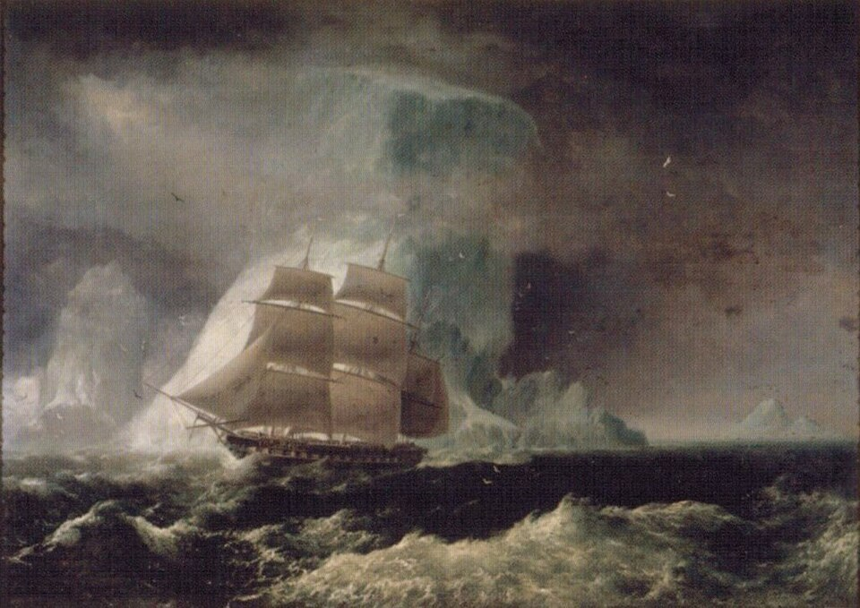

Blonde Reef
Place: Blonde Reef, Hilo Bay, Hawaiʻi Island
Type: Coral reef / historic maritime landmark
Namesake: HMS Blonde, the British frigate that returned the remains of King Kamehameha II and Queen Kamāmalu to Hawaiʻi in 1825
Story it tells: How the voyage that returned Hawaiʻi's royal couple from London left a lasting mark on Hilo Bay and today recalls a British vessel and its historic visit to the islands.

Blonde Reef lies in Hilo Bay on the eastern coast of Hawaiʻi Island, named for the British frigate HMS Blonde, which visited the Hawaiian Islands in 1825. The vessel carried the remains of King Kamehameha II (Liholiho) and Queen Kamāmalu, who had traveled to London in 1824 and died there after contracting measles. Commanded by Lord George Anson Byron, the ship arrived in Honolulu in May 1825, returning the royal couple to their homeland following a journey that had ended in tragedy.
After completing its initial duties on Oʻahu, HMS Blonde continued its voyage through the Hawaiian Islands, arriving at Hilo in June 1825. During its visit, the ship's officers surveyed Hilo Bay and nearby reef. The expedition also left its mark on the bay's place names. Queen Regent Kaʻahumanu directed that Hilo Bay be called Byron Bay in honor of the ship's commander, while the offshore reef became known as Blonde Reef in recognition of the vessel. Although the name Byron Bay eventually fell out of common use, Blonde Reef remained connected to Hilo's maritime geography.
For many generations, the reef formed part of the natural barrier protecting Hilo Bay from the ocean. As Hilo developed into a commercial port, however, the harbor's natural conditions presented challenges for larger vessels and growing maritime trade. In 1908, construction began on a substantial breakwater extending across the reef to provide greater protection for ships entering and anchoring in the bay. Completed in 1929, the breakwater incorporated and substantially altered the natural reef, creating one of the defining features of modern Hilo Harbor.
Today, Hilo's breakwater remains a prominent feature of the bay, extending into the waters where HMS Blonde anchored nearly two centuries ago. Although the original reef has been transformed by harbor construction, its name preserves the memory of a British vessel whose voyage carried Hawaiʻi's king and queen home. Blonde Reef remains a reminder of an extraordinary chapter in Hawaiian history, when an international royal journey ended in tragedy and left a lasting name upon the shores of Hilo.